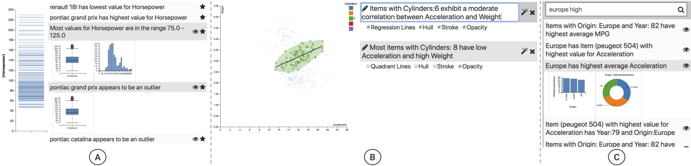

Arjun Srinivasan, Steven M. Drucker, Alex Endert, and John Stasko
Recently, an increasing number of visualization systems have begun to incorporate natural language generation (NLG) capabilities into their interfaces. NLG-based visualization systems typically leverage a suite of statistical functions to automatically extract key facts about the underlying data and surface them as natural language sentences alongside visualizations. With current systems, users are typically required to read the system-generated sentences and mentally map them back to the accompanying visualization. However, depending on the features of the visualization (e.g., visualization type, data density) and the complexity of the data fact, mentally mapping facts to visualizations can be a challenging task. Furthermore, more than one visualization could be used to illustrate a single data fact. Unfortunately, current tools provide little or no support for users to explore such alternatives. In this paper, we explore how system-generated data facts can be treated as interactive widgets to help users interpret visualizations andcommunicate their findings. We present Voder, a system that lets users interact with automatically-generated data facts to explore both alternative visualizations to convey a data fact as well as a set of embellishments to highlight a fact within a visualization. Leveraging data facts as interactive widgets, Voder also facilitates data fact-based visualization search. To assess Voder’s design and features, we conducted a preliminary user study with 12 participants having varying levels of experience with visualization tools. Participant feedback suggested that interactive data facts aided them in interpreting visualizations. Participants also stated that the suggestions surfaced through the facts helped them explore alternative visualizations and embellishments to communicate individual data facts.